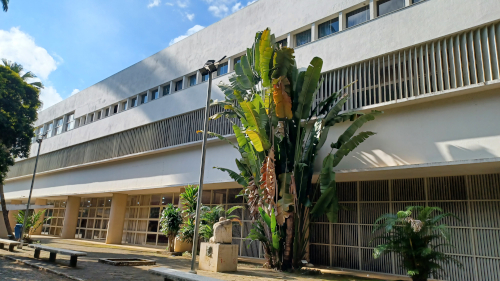

COLÉGIO CATAGUASES
[breve texto sobre a obra]
-
Bastidores da Criação: A Escolha de Niemeyer e a Visão Cultural: Mas quais os bastidores e o impacto da contratação do arquiteto Oscar Niemeyer para idealizar a sede do Colégio Cataguases? Promovida pelo industrial e intelectual Francisco Inácio Peixoto com a intermediação do escritor Marques Rebelo, a escolha alinhou a cidade aos conceitos mais avançados de arquitetura e arte moderna no Brasil do pós-guerra. É preciso ponderar também sobre as nuances cronológicas do projeto, cujos registros variam de 1943 a 1947, culminando na inauguração em 1949. O empreendimento superou o conceito tradicional de escola. O complexo foi concebido como um centro integral de convivência e formação, contemplando espaços como teatro, cinema, anfiteatro, dormitórios, restaurante e piscina. Mostrando-se ainda como exemplo da cooperação entre Niemeyer e mestres como Burle Marx, Portinari, Paulo Werneck, Jan Zach e Joaquim Tenreiro. A iniciativa foi o ponto de partida para consolidar Cataguases como referência do movimento modernista no país.
-
A História e a Arquitetura do Modernismo em Cataguases: A cidade de Cataguases, no interior de Minas Gerais, tornou-se um importante polo modernista fora do eixo das grandes capitais. Passando desde a povoação do Meia Pataca até o avanço do desenvolvimento urbano e econômico impulsionado pela indústria têxtil sob a liderança da família Peixoto, é destacado o papel crucial da efervescência cultural local, demonstrada pelo Ciclo de Cinema de Humberto Mauro e pela influente Revista Verde. A construção da nova sede do Colégio Cataguases na década de 1940 foi projetada por Oscar Niemeyer. A obra exemplifica a arquitetura moderna pela presença de pilotis, brise-soleil, janelas em fita e a icônica marquise sinuosa "asa de borboleta". Além disso, podemos descrever a escola dentro do conceito de "obra de arte total", integrando intervenções de Roberto Burle Marx, Cândido Portinari, Paulo Werneck, Jan Zach e Joaquim Tenreiro. O reconhecimento deste legado foi consolidado em 1994, quando o prédio foi oficialmente tombado pelo IPHAN.
-
Conheça os Destaques Modernistas e Curiosidades da Escola: O projeto arquitetônico desenvolvido por Oscar Niemeyer rompeu com os estilos ornamentados do passado para dar lugar a uma estrutura funcional, leve e harmoniosamente integrada ao meio ambiente, valendo-se do concreto armado, linhas geométricas, pilotis e amplas aberturas de iluminação. Alguns dados históricos e curiosidades marcantes que enriquecem a memória da instituição. Dentre eles, ressalta-se o fato do colégio ter contado com Chico Buarque entre seus alunos, além de ter abrigado importantes espaços culturais da cidade, como o Museu de Belas Artes de Cataguases e o Museu de Arte Popular.
-
A História do Painel "Tiradentes": Uma das mais importantes obras de arte integradas ao Colégio Cataguases é o painel Tiradentes, criado por Cândido Portinari entre 1948 e 1949. Encomendado por Francisco Inácio Peixoto para compor o saguão do edifício projetado por Niemeyer, o trabalho retrata de forma monumental os eventos da Inconfidência Mineira, com destaque central para o enforcamento e esquartejamento do herói nacional. Em 1975, por não estar incluído na alienação do prédio do colégio, o painel original foi adquirido pelo Governo do Estado de São Paulo. Hoje, a obra-prima encontra-se exposta no Salão de Atos do Memorial da América Latina, na capital paulista. Para preservar a memória e a proposta estética original do projeto modernista, o saguão do Colégio Cataguases exibe atualmente uma réplica fotográfica em tamanho real.